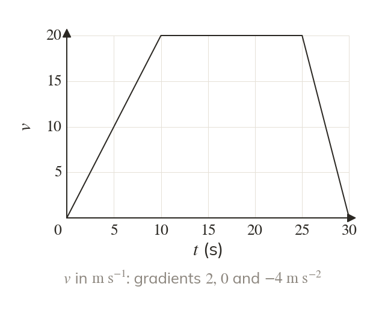
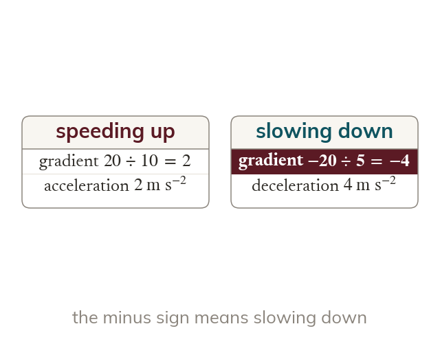
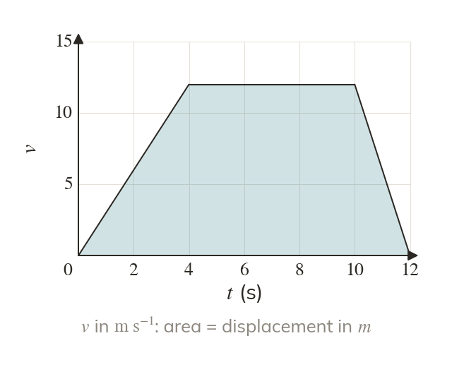
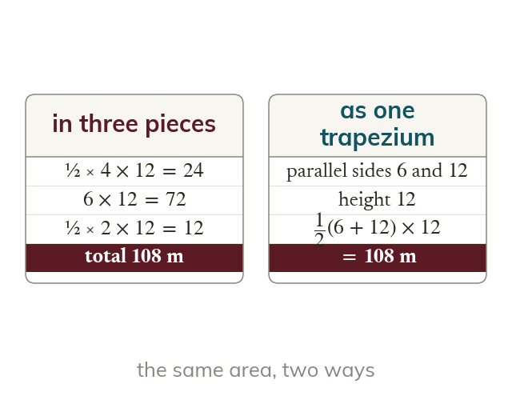
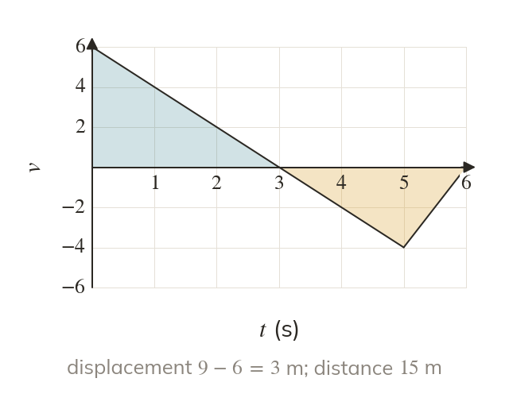

The gradient is the acceleration
On a velocity-time graph, the gradient of each straight stage is the acceleration on that stage. A horizontal stage means a constant velocity, not that the body is at rest.
A velocity-time graph shows how a body speeds up and slows down: its gradient is the acceleration and the area under it is the displacement. The constant acceleration formulae of the next two lessons are read straight from this graph.
Work down the page at your own pace. Write every answer in your book first, then click to check it.
Read each card, then follow the worked examples one step at a time.

On a velocity-time graph, the gradient of each straight stage is the acceleration on that stage. A horizontal stage means a constant velocity, not that the body is at rest.

A stage sloping down means the body is slowing down, so its acceleration is negative. A deceleration of is an acceleration of
Pick an answer. If it's wrong, the feedback tells you which mistake it was.
Read each card, then follow the worked examples one step at a time.

The area between a velocity-time graph and the time axis is the displacement. Split it into triangles and rectangles, or treat the whole shape as a trapezium.

The area of a trapezium is half the sum of the parallel sides times the distance between them. Here the parallel sides are times and the distance between them is the velocity.

Where the velocity is negative the body moves backwards, so an area below the time axis is a negative displacement. For the total distance, add the sizes of the areas.
Pick an answer. If it's wrong, the feedback tells you which mistake it was.
Finished? Next lesson: M9.3 Constant Acceleration Formulae 1.
For each skill, tap the one that is true for you today. Your Revise pages start with anything you mark Not yet.
Your ratings are saved on this device only.
Log in, then search for a code to practise that skill.